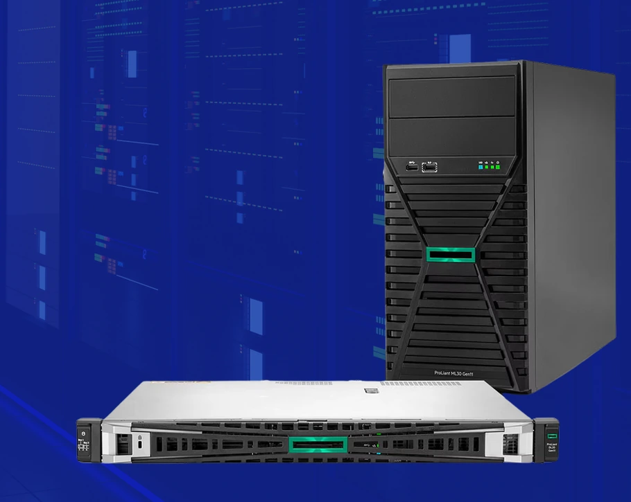
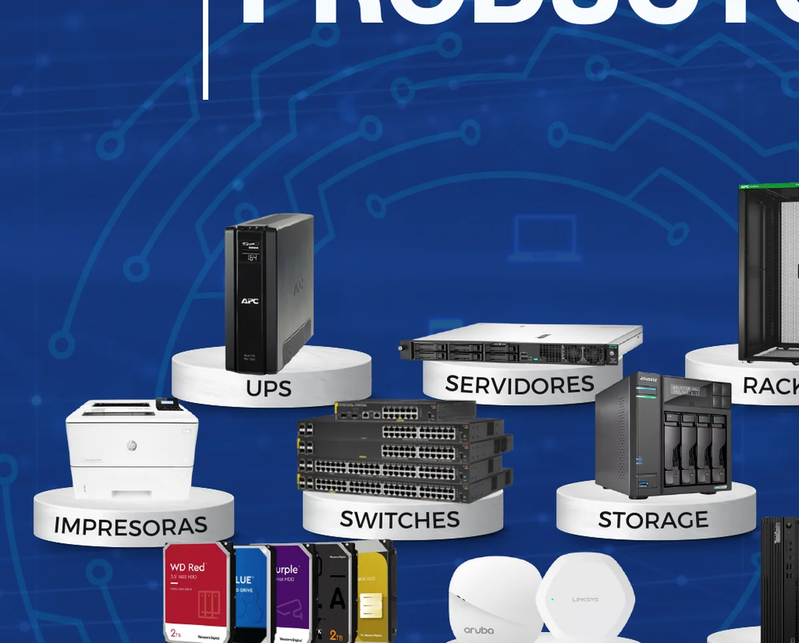
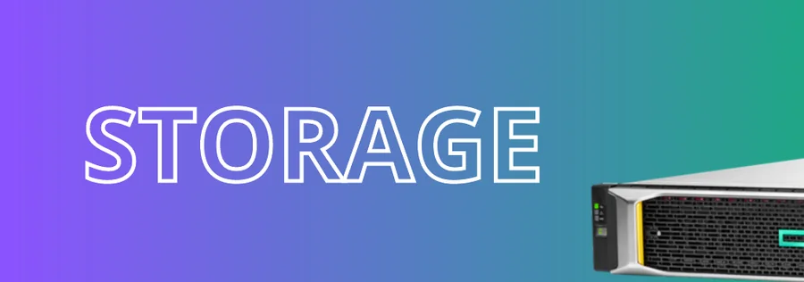
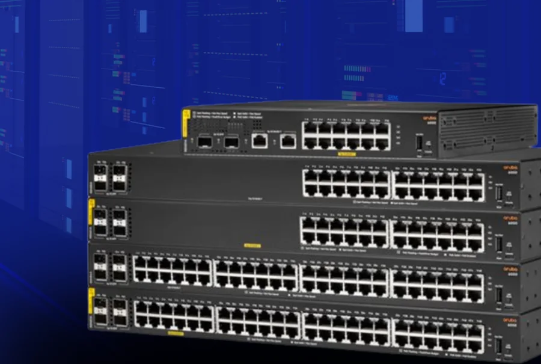
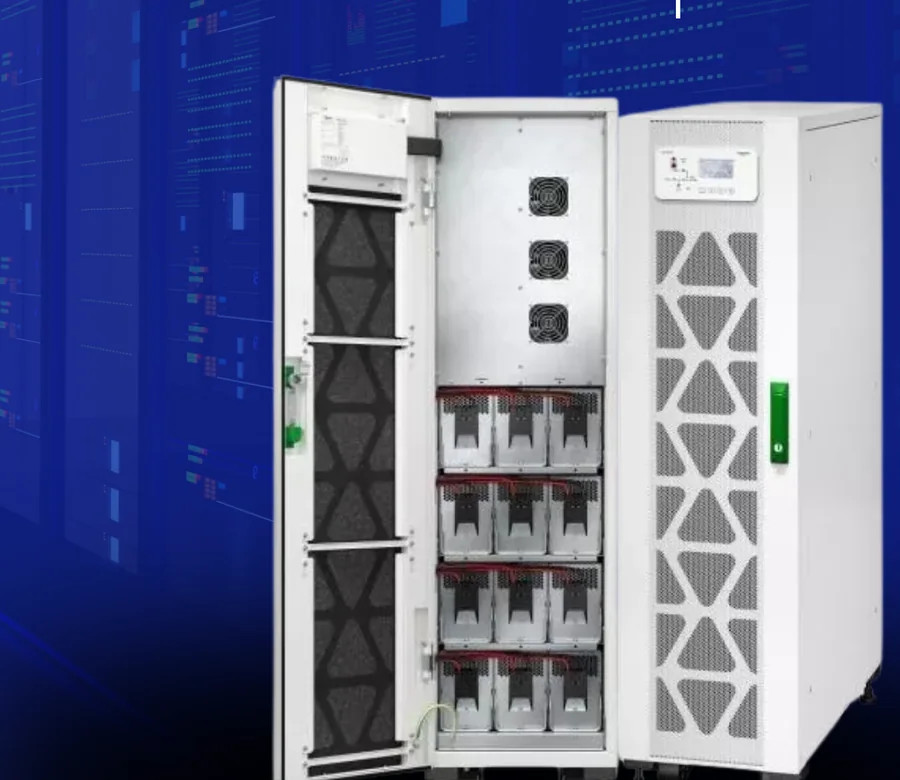
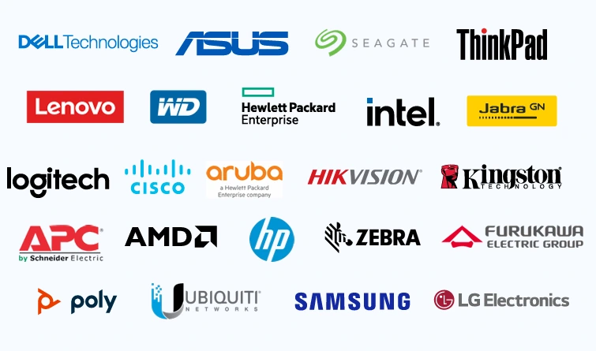

01
Servidores e infraestructura
HPE ProLiant, Lenovo ThinkSystem, racks y configuraciones para virtualización, aplicaciones, archivos, analítica y servicios de negocio.
HPE · Lenovo · Intel · AMDTe ayudamos a identificar y presupuestar infraestructura, conectividad, almacenamiento, energía y puestos de trabajo con alternativas de marcas reconocidas y configuraciones acordes a cada necesidad.

Área 1 Equipamiento organiza el portafolio por necesidad de negocio: capacidad de cómputo, almacenamiento, conectividad, continuidad eléctrica y productividad del usuario.
Los modelos y marcas publicados funcionan como referencia de soluciones presupuestables. Disponibilidad, configuración final, plazo y precio se confirman al momento de cotizar.
Desde una oficina o sucursal hasta entornos de virtualización, almacenamiento, redes corporativas y continuidad eléctrica.

HPE ProLiant, Lenovo ThinkSystem, racks y configuraciones para virtualización, aplicaciones, archivos, analítica y servicios de negocio.
HPE · Lenovo · Intel · AMD
Cabinas SAN, almacenamiento híbrido, NAS, discos y soluciones para backup, archivos, videovigilancia y virtualización.
HPE · Lenovo · Asustor · WD · Seagate
Switches, routers, access points, Wi‑Fi 6, enlaces outdoor, PoE y conectividad para PyMEs, campus, sucursales y datacenter.
Aruba · MikroTik · Ubiquiti · Cisco
Protección eléctrica para puestos, servidores y aplicaciones críticas, con alternativas interactivas, online, rack/tower y trifásicas.
APC by Schneider ElectricNotebooks, desktops, monitores, impresoras, memorias, discos, webcams, audio, colectores y accesorios para equipar equipos de trabajo.
Dell · HP · Lenovo · ASUS · Samsung · LG · Logitech · Jabra · Zebra · KingstonEl portafolio reúne fabricantes de infraestructura, redes, almacenamiento, energía y puesto de trabajo. Esto permite comparar opciones y construir una propuesta coherente con el proyecto.

Selección orientativa basada en el catálogo compartido. La configuración exacta se valida antes de cotizar.
Opciones con Intel Xeon Silver, 32 GB DDR5, formato 1U, bahías SFF y fuentes hot-plug. Pensado para virtualización y cargas empresariales.
Plataforma 2U con alternativas de 12 LFF u 8 SFF, memoria DDR5 y fuentes redundantes; ideal cuando se necesita mayor expansión.
Opciones Intel Xeon o AMD EPYC, DDR5, administración XClarity y expansión PCIe Gen5 para entornos modernos de infraestructura.
Storage SAN con alternativas Fibre Channel e iSCSI, controladores redundantes y configuraciones SFF para virtualización y datos empresariales.
Opciones de 12 bahías de 3,5" o 24 bahías SFF, alta disponibilidad y expansión para backup, archivos y entornos VMware/Microsoft/Linux.
NAS de 4 bahías con 2.5GbE; alternativas Realtek o Intel, RAID y funciones de backup para oficinas y pequeñas empresas.
Switching administrable para acceso, agregación y núcleo, con opciones PoE, apilamiento y operación consistente sobre AOS-CX.
Routers Cloud Core, switches 10G/25G/40G, soluciones PoE y access points para redes de distinta escala y complejidad.
Access points Wi‑Fi 6, switches PoE, gateways y soluciones outdoor punto a punto o punto-multipunto para proyectos integrales.
UPS compactas e interactivas para puestos de trabajo, electrónica y pequeñas cargas, con diferentes niveles de autonomía y monitoreo.
Alternativas online rack/tower para aplicaciones críticas, con bypass automático, pantalla LCD y opciones de autonomía extendida.
Soluciones escalables para infraestructura crítica, con opciones rack/tower, gestión remota y líneas de mayor potencia.
Cuanto más claro sea el requerimiento, más precisa puede ser la alternativa de marca, capacidad y configuración.
Uso previsto, cantidad de usuarios, aplicaciones, criticidad y crecimiento esperado.
Procesamiento, memoria, almacenamiento, puertos, PoE, Wi‑Fi, autonomía y redundancia.
Comparación de familias y marcas compatibles con el alcance y el presupuesto.
Modelo, cantidad, configuración, disponibilidad y condiciones confirmadas al momento de presupuestar.
Provisión y próximos pasos según el alcance acordado para el proyecto.